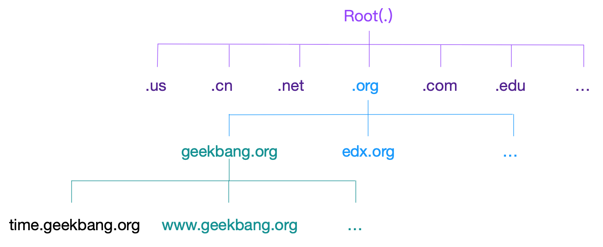
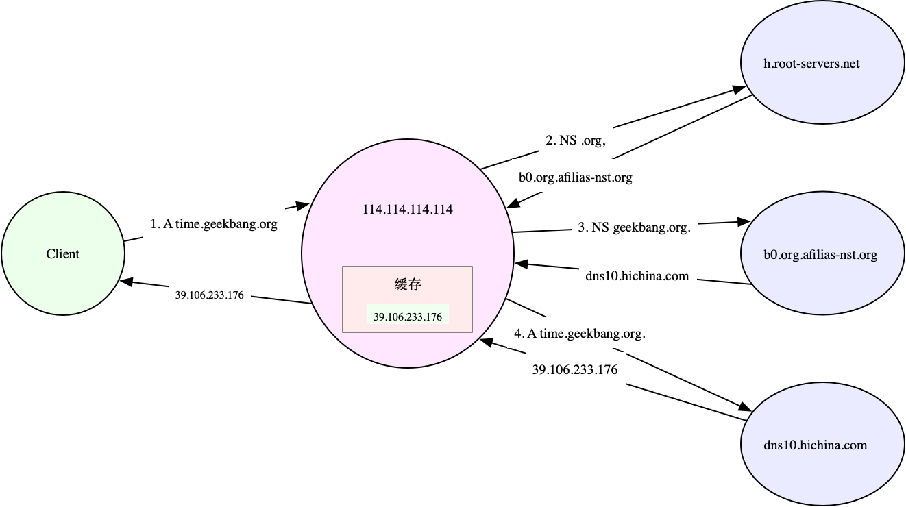

- 00 开篇词 别再让Linux性能问题成为你的绊脚石.md.html
- 01 如何学习Linux性能优化？.md.html
- 02 基础篇：到底应该怎么理解“平均负载”？.md.html
- 03 基础篇：经常说的 CPU 上下文切换是什么意思？（上）.md.html
- 04 基础篇：经常说的 CPU 上下文切换是什么意思？（下）.md.html
- 05 基础篇：某个应用的CPU使用率居然达到100%，我该怎么办？.md.html
- 06 案例篇：系统的 CPU 使用率很高，但为啥却找不到高 CPU 的应用？.md.html
- 07 案例篇：系统中出现大量不可中断进程和僵尸进程怎么办？（上）.md.html
- 08 案例篇：系统中出现大量不可中断进程和僵尸进程怎么办？（下）.md.html
- 09 基础篇：怎么理解Linux软中断？.md.html
- 10 案例篇：系统的软中断CPU使用率升高，我该怎么办？.md.html
- 11 套路篇：如何迅速分析出系统CPU的瓶颈在哪里？.md.html
- 12 套路篇：CPU 性能优化的几个思路.md.html
- 13 答疑（一）：无法模拟出 RES 中断的问题，怎么办？.md.html
- 14 答疑（二）：如何用perf工具分析Java程序？.md.html
- 15 基础篇：Linux内存是怎么工作的？.md.html
- 16 基础篇：怎么理解内存中的Buffer和Cache？.md.html
- 17 案例篇：如何利用系统缓存优化程序的运行效率？.md.html
- 18 案例篇：内存泄漏了，我该如何定位和处理？.md.html
- 19 案例篇：为什么系统的Swap变高了（上）.md.html
- 20 案例篇：为什么系统的Swap变高了？（下）.md.html
- 21 套路篇：如何“快准狠”找到系统内存的问题？.md.html
- 22 答疑（三）：文件系统与磁盘的区别是什么？.md.html
- 23 基础篇：Linux 文件系统是怎么工作的？.md.html
- 24 基础篇：Linux 磁盘I_O是怎么工作的（上）.md.html
- 25 基础篇：Linux 磁盘I_O是怎么工作的（下）.md.html
- 26 案例篇：如何找出狂打日志的“内鬼”？.md.html
- 27 案例篇：为什么我的磁盘I_O延迟很高？.md.html
- 28 案例篇：一个SQL查询要15秒，这是怎么回事？.md.html
- 29 案例篇：Redis响应严重延迟，如何解决？.md.html
- 30 套路篇：如何迅速分析出系统I_O的瓶颈在哪里？.md.html
- 31 套路篇：磁盘 I_O 性能优化的几个思路.md.html
- 32 答疑（四）：阻塞、非阻塞 I_O 与同步、异步 I_O 的区别和联系.md.html
- 33 关于 Linux 网络，你必须知道这些（上）.md.html
- 34 关于 Linux 网络，你必须知道这些（下）.md.html
- 35 基础篇：C10K 和 C1000K 回顾.md.html
- 36 套路篇：怎么评估系统的网络性能？.md.html
- 37 案例篇：DNS 解析时快时慢，我该怎么办？.md.html
- 38 案例篇：怎么使用 tcpdump 和 Wireshark 分析网络流量？.md.html
- 39 案例篇：怎么缓解 DDoS 攻击带来的性能下降问题？.md.html
- 40 案例篇：网络请求延迟变大了，我该怎么办？.md.html
- 41 案例篇：如何优化 NAT 性能？（上）.md.html
- 42 案例篇：如何优化 NAT 性能？（下）.md.html
- 43 套路篇：网络性能优化的几个思路（上）.md.html
- 44 套路篇：网络性能优化的几个思路（下）.md.html
- 45 答疑（五）：网络收发过程中，缓冲区位置在哪里？.md.html
- 46 案例篇：为什么应用容器化后，启动慢了很多？.md.html
- 47 案例篇：服务器总是时不时丢包，我该怎么办？（上）.md.html
- 48 案例篇：服务器总是时不时丢包，我该怎么办？（下）.md.html
- 49 案例篇：内核线程 CPU 利用率太高，我该怎么办？.md.html
- 50 案例篇：动态追踪怎么用？（上）.md.html
- 51 案例篇：动态追踪怎么用？（下）.md.html
- 52 案例篇：服务吞吐量下降很厉害，怎么分析？.md.html
- 53 套路篇：系统监控的综合思路.md.html
- 54 套路篇：应用监控的一般思路.md.html
- 55 套路篇：分析性能问题的一般步骤.md.html
- 56 套路篇：优化性能问题的一般方法.md.html
- 57 套路篇：Linux 性能工具速查.md.html
- 58 答疑（六）：容器冷启动如何性能分析？.md.html
- 加餐（一） 书单推荐：性能优化和Linux 系统原理.md.html
- 加餐（二） 书单推荐：网络原理和 Linux 内核实现.md.html
- 用户故事 “半路出家 ”，也要顺利拿下性能优化！.md.html
- 用户故事 运维和开发工程师们怎么说？.md.html
- 结束语 愿你攻克性能难关.md.html
- 捐赠
37 案例篇：DNS 解析时快时慢，我该怎么办？
你好，我是倪朋飞。
上一节，我带你一起学习了网络性能的评估方法。简单回顾一下，Linux 网络基于 TCP/IP 协议栈构建，而在协议栈的不同层，我们所关注的网络性能也不尽相同。
在应用层，我们关注的是应用程序的并发连接数、每秒请求数、处理延迟、错误数等，可以使用 wrk、JMeter 等工具，模拟用户的负载，得到想要的测试结果。
而在传输层，我们关注的是 TCP、UDP 等传输层协议的工作状况，比如 TCP 连接数、 TCP 重传、TCP 错误数等。此时，你可以使用 iperf、netperf 等，来测试 TCP 或 UDP 的性能。
再向下到网络层，我们关注的则是网络包的处理能力，即 PPS。Linux 内核自带的 pktgen，就可以帮你测试这个指标。
由于低层协议是高层协议的基础，所以一般情况下，我们所说的网络优化，实际上包含了整个网络协议栈的所有层的优化。当然，性能要求不同，具体需要优化的位置和目标并不完全相同。
前面在评估网络性能（比如 HTTP 性能）时，我们在测试工具中指定了网络服务的 IP 地址。IP 地址是 TCP/IP 协议中，用来确定通信双方的一个重要标识。每个 IP 地址又包括了主机号和网络号两部分。相同网络号的主机组成一个子网；不同子网再通过路由器连接，组成一个庞大的网络。
然而，IP 地址虽然方便了机器的通信，却给访问这些服务的人们，带来了很重的记忆负担。我相信，没几个人能记得住 GitHub 所在的 IP 地址，因为这串字符，对人脑来说并没有什么含义，不符合我们的记忆逻辑。
不过，这并不妨碍我们经常使用这个服务。为什么呢？当然是因为还有更简单、方便的方式。我们可以通过域名 github.com 访问，而不是必须依靠具体的 IP 地址，这其实正是域名系统 DNS 的由来。
DNS（Domain Name System），即域名系统，是互联网中最基础的一项服务，主要提供域名和 IP 地址之间映射关系的查询服务。
DNS 不仅方便了人们访问不同的互联网服务，更为很多应用提供了，动态服务发现和全局负载均衡（Global Server Load Balance，GSLB）的机制。这样，DNS 就可以选择离用户最近的 IP 来提供服务。即使后端服务的 IP 地址发生变化，用户依然可以用相同域名来访问。
DNS显然是我们工作中基础而重要的一个环节。那么，DNS 出现问题时，又该如何分析和排查呢？今天，我就带你一起来看看这个问题。
域名与 DNS 解析
域名我们本身都比较熟悉，由一串用点分割开的字符组成，被用作互联网中的某一台或某一组计算机的名称，目的就是为了方便识别，互联网中提供各种服务的主机位置。
要注意，域名是全球唯一的，需要通过专门的域名注册商才可以申请注册。为了组织全球互联网中的众多计算机，域名同样用点来分开，形成一个分层的结构。而每个被点分割开的字符串，就构成了域名中的一个层级，并且位置越靠后，层级越高。
我们以极客时间的网站 time.geekbang.org 为例，来理解域名的含义。这个字符串中，最后面的 org 是顶级域名，中间的 geekbang 是二级域名，而最左边的 time 则是三级域名。
如下图所示，注意点（.）是所有域名的根，也就是说所有域名都以点作为后缀，也可以理解为，在域名解析的过程中，所有域名都以点结束。

通过理解这几个概念，你可以看出，域名主要是为了方便让人记住，而IP 地址是机器间的通信的真正机制。把域名转换为 IP 地址的服务，也就是我们开头提到的，域名解析服务（DNS），而对应的服务器就是域名服务器，网络协议则是 DNS 协议。
这里注意，DNS 协议在 TCP/IP 栈中属于应用层，不过实际传输还是基于 UDP 或者 TCP 协议（UDP 居多） ，并且域名服务器一般监听在端口 53 上。
既然域名以分层的结构进行管理，相对应的，域名解析其实也是用递归的方式（从顶级开始，以此类推），发送给每个层级的域名服务器，直到得到解析结果。
不过不要担心，递归查询的过程并不需要你亲自操作，DNS 服务器会替你完成，你要做的，只是预先配置一个可用的 DNS 服务器就可以了。
当然，我们知道，通常来说，每级DNS 服务器，都会有最近解析记录的缓存。当缓存命中时，直接用缓存中的记录应答就可以了。如果缓存过期或者不存在，才需要用刚刚提到的递归方式查询。
所以，系统管理员在配置 Linux 系统的网络时，除了需要配置 IP 地址，还需要给它配置 DNS 服务器，这样它才可以通过域名来访问外部服务。
比如，我的系统配置的就是 114.114.114.114 这个域名服务器。你可以执行下面的命令，来查询你的系统配置：
$ cat /etc/resolv.conf
nameserver 114.114.114.114
另外，DNS 服务通过资源记录的方式，来管理所有数据，它支持 A、CNAME、MX、NS、PTR 等多种类型的记录。比如：
A 记录，用来把域名转换成 IP 地址；
CNAME 记录，用来创建别名；
而 NS 记录，则表示该域名对应的域名服务器地址。
简单来说，当我们访问某个网址时，就需要通过 DNS 的 A 记录，查询该域名对应的 IP 地址，然后再通过该 IP 来访问 Web 服务。
比如，还是以极客时间的网站 time.geekbang.org 为例，执行下面的 nslookup 命令，就可以查询到这个域名的 A 记录，可以看到，它的 IP 地址是 39.106.233.176：
$ nslookup time.geekbang.org
# 域名服务器及端口信息
Server: 114.114.114.114
Address: 114.114.114.114#53
# 非权威查询结果
Non-authoritative answer:
Name: time.geekbang.org
Address: 39.106.233.17
这里要注意，由于 114.114.114.114 并不是直接管理 time.geekbang.org 的域名服务器，所以查询结果是非权威的。使用上面的命令，你只能得到 114.114.114.114 查询的结果。
前面还提到了，如果没有命中缓存，DNS 查询实际上是一个递归过程，那有没有方法可以知道整个递归查询的执行呢？
其实除了 nslookup，另外一个常用的 DNS 解析工具 dig ，就提供了 trace 功能，可以展示递归查询的整个过程。比如你可以执行下面的命令，得到查询结果：
# +trace表示开启跟踪查询
# +nodnssec表示禁止DNS安全扩展
$ dig +trace +nodnssec time.geekbang.org
; <<>> DiG 9.11.3-1ubuntu1.3-Ubuntu <<>> +trace +nodnssec time.geekbang.org
;; global options: +cmd
. 322086 IN NS m.root-servers.net.
. 322086 IN NS a.root-servers.net.
. 322086 IN NS i.root-servers.net.
. 322086 IN NS d.root-servers.net.
. 322086 IN NS g.root-servers.net.
. 322086 IN NS l.root-servers.net.
. 322086 IN NS c.root-servers.net.
. 322086 IN NS b.root-servers.net.
. 322086 IN NS h.root-servers.net.
. 322086 IN NS e.root-servers.net.
. 322086 IN NS k.root-servers.net.
. 322086 IN NS j.root-servers.net.
. 322086 IN NS f.root-servers.net.
;; Received 239 bytes from 114.114.114.114#53(114.114.114.114) in 1340 ms
org. 172800 IN NS a0.org.afilias-nst.info.
org. 172800 IN NS a2.org.afilias-nst.info.
org. 172800 IN NS b0.org.afilias-nst.org.
org. 172800 IN NS b2.org.afilias-nst.org.
org. 172800 IN NS c0.org.afilias-nst.info.
org. 172800 IN NS d0.org.afilias-nst.org.
;; Received 448 bytes from 198.97.190.53#53(h.root-servers.net) in 708 ms
geekbang.org. 86400 IN NS dns9.hichina.com.
geekbang.org. 86400 IN NS dns10.hichina.com.
;; Received 96 bytes from 199.19.54.1#53(b0.org.afilias-nst.org) in 1833 ms
time.geekbang.org. 600 IN A 39.106.233.176
;; Received 62 bytes from 140.205.41.16#53(dns10.hichina.com) in 4 ms
dig trace 的输出，主要包括四部分。
第一部分，是从 114.114.114.114 查到的一些根域名服务器（.）的 NS 记录。
第二部分，是从 NS 记录结果中选一个（h.root-servers.net），并查询顶级域名 org. 的 NS 记录。
第三部分，是从 org. 的 NS 记录中选择一个（b0.org.afilias-nst.org），并查询二级域名 geekbang.org. 的 NS 服务器。
最后一部分，就是从 geekbang.org. 的 NS 服务器（dns10.hichina.com）查询最终主机 time.geekbang.org. 的 A 记录。
这个输出里展示的各级域名的 NS 记录，其实就是各级域名服务器的地址，可以让你更清楚 DNS 解析的过程。 为了帮你更直观理解递归查询，我把这个过程整理成了一张流程图，你可以保存下来理解。

当然，不仅仅是发布到互联网的服务需要域名，很多时候，我们也希望能对局域网内部的主机进行域名解析（即内网域名，大多数情况下为主机名）。Linux 也支持这种行为。
所以，你可以把主机名和 IP 地址的映射关系，写入本机的 /etc/hosts 文件中。这样，指定的主机名就可以在本地直接找到目标 IP。比如，你可以执行下面的命令来操作：
$ cat /etc/hosts
127.0.0.1 localhost localhost.localdomain
::1 localhost6 localhost6.localdomain6
192.168.0.100 domain.com
或者，你还可以在内网中，搭建自定义的 DNS 服务器，专门用来解析内网中的域名。而内网 DNS 服务器，一般还会设置一个或多个上游 DNS 服务器，用来解析外网的域名。
清楚域名与 DNS 解析的基本原理后，接下来，我就带你一起来看几个案例，实战分析 DNS 解析出现问题时，该如何定位。
案例准备
本次案例还是基于 Ubuntu 18.04，同样适用于其他的 Linux 系统。我使用的案例环境如下所示：
机器配置：2 CPU，8GB 内存。
预先安装 docker 等工具，如 apt install docker.io。
你可以先打开一个终端，SSH 登录到 Ubuntu 机器中，然后执行下面的命令，拉取案例中使用的 Docker 镜像：
$ docker pull feisky/dnsutils
Using default tag: latest
...
Status: Downloaded newer image for feisky/dnsutils:latest
然后，运行下面的命令，查看主机当前配置的 DNS 服务器：
$ cat /etc/resolv.conf
nameserver 114.114.114.114
可以看到，我这台主机配置的 DNS 服务器是 114.114.114.114。
到这里，准备工作就完成了。接下来，我们正式进入操作环节。
案例分析
案例1：DNS解析失败
首先，执行下面的命令，进入今天的第一个案例。如果一切正常，你将可以看到下面这个输出：
# 进入案例环境的SHELL终端中
$ docker run -it --rm -v $(mktemp):/etc/resolv.conf feisky/dnsutils bash
root@7e9ed6ed4974:/#
注意，这儿root后面的 7e9ed6ed4974，是 Docker 生成容器的 ID前缀，你的环境中很可能是不同的 ID，所以直接忽略这一项就可以了。
注意：下面的代码段中， /# 开头的命令都表示在容器内部运行的命令。
接着，继续在容器终端中，执行 DNS 查询命令，我们还是查询 time.geekbang.org 的 IP 地址：
/# nslookup time.geekbang.org
;; connection timed out; no servers could be reached
你可以发现，这个命令阻塞很久后，还是失败了，报了 connection timed out 和 no servers could be reached 错误。
看到这里，估计你的第一反应就是网络不通了，到底是不是这样呢？我们用 ping 工具检查试试。执行下面的命令，就可以测试本地到 114.114.114.114 的连通性：
/# ping -c3 114.114.114.114
PING 114.114.114.114 (114.114.114.114): 56 data bytes
64 bytes from 114.114.114.114: icmp_seq=0 ttl=56 time=31.116 ms
64 bytes from 114.114.114.114: icmp_seq=1 ttl=60 time=31.245 ms
64 bytes from 114.114.114.114: icmp_seq=2 ttl=68 time=31.128 ms
--- 114.114.114.114 ping statistics ---
3 packets transmitted, 3 packets received, 0% packet loss
round-trip min/avg/max/stddev = 31.116/31.163/31.245/0.058 ms
这个输出中，你可以看到网络是通的。那要怎么知道nslookup 命令失败的原因呢？这里其实有很多方法，最简单的一种，就是开启 nslookup 的调试输出，查看查询过程中的详细步骤，排查其中是否有异常。
比如，我们可以继续在容器终端中，执行下面的命令：
/# nslookup -debug time.geekbang.org
;; Connection to 127.0.0.1#53(127.0.0.1) for time.geekbang.org failed: connection refused.
;; Connection to ::1#53(::1) for time.geekbang.org failed: address not available.
从这次的输出可以看到，nslookup 连接环回地址（127.0.0.1 和 ::1）的 53 端口失败。这里就有问题了，为什么会去连接环回地址，而不是我们的先前看到的 114.114.114.114 呢？
你可能已经想到了症结所在——有可能是因为容器中没有配置 DNS 服务器。那我们就执行下面的命令确认一下：
/# cat /etc/resolv.conf
果然，这个命令没有任何输出，说明容器里的确没有配置 DNS 服务器。到这一步，很自然的，我们就知道了解决方法。在 /etc/resolv.conf 文件中，配置上 DNS 服务器就可以了。
你可以执行下面的命令，在配置好 DNS 服务器后，重新执行 nslookup 命令。自然，我们现在发现，这次可以正常解析了：
/# echo "nameserver 114.114.114.114" > /etc/resolv.conf
/# nslookup time.geekbang.org
Server: 114.114.114.114
Address: 114.114.114.114#53
Non-authoritative answer:
Name: time.geekbang.org
Address: 39.106.233.176
到这里，第一个案例就轻松解决了。最后，在终端中执行 exit 命令退出容器，Docker 就会自动清理刚才运行的容器。
案例2：DNS解析不稳定
接下来，我们再来看第二个案例。执行下面的命令，启动一个新的容器，并进入它的终端中：
$ docker run -it --rm --cap-add=NET_ADMIN --dns 8.8.8.8 feisky/dnsutils bash
root@0cd3ee0c8ecb:/#
然后，跟上一个案例一样，还是运行 nslookup 命令，解析 time.geekbang.org 的 IP 地址。不过，这次要加一个 time 命令，输出解析所用时间。如果一切正常，你可能会看到如下输出：
/# time nslookup time.geekbang.org
Server: 8.8.8.8
Address: 8.8.8.8#53
Non-authoritative answer:
Name: time.geekbang.org
Address: 39.106.233.176
real 0m10.349s
user 0m0.004s
sys 0m0.0
可以看到，这次解析非常慢，居然用了 10 秒。如果你多次运行上面的 nslookup 命令，可能偶尔还会碰到下面这种错误：
/# time nslookup time.geekbang.org
;; connection timed out; no servers could be reached
real 0m15.011s
user 0m0.006s
sys 0m0.006s
换句话说，跟上一个案例类似，也会出现解析失败的情况。综合来看，现在 DNS 解析的结果不但比较慢，而且还会发生超时失败的情况。
这是为什么呢？碰到这种问题该怎么处理呢？
其实，根据前面的讲解，我们知道，DNS 解析，说白了就是客户端与服务器交互的过程，并且这个过程还使用了 UDP 协议。
那么，对于整个流程来说，解析结果不稳定，就有很多种可能的情况了。比方说：
DNS 服务器本身有问题，响应慢并且不稳定；
或者是，客户端到 DNS 服务器的网络延迟比较大；
再或者，DNS 请求或者响应包，在某些情况下被链路中的网络设备弄丢了。
根据上面 nslookup 的输出，你可以看到，现在客户端连接的DNS 是 8.8.8.8，这是 Google 提供的 DNS 服务。对 Google 我们还是比较放心的，DNS 服务器出问题的概率应该比较小。基本排除了DNS服务器的问题，那是不是第二种可能，本机到 DNS 服务器的延迟比较大呢？
前面讲过，ping 可以用来测试服务器的延迟。比如，你可以运行下面的命令：
/# ping -c3 8.8.8.8
PING 8.8.8.8 (8.8.8.8): 56 data bytes
64 bytes from 8.8.8.8: icmp_seq=0 ttl=31 time=137.637 ms
64 bytes from 8.8.8.8: icmp_seq=1 ttl=31 time=144.743 ms
64 bytes from 8.8.8.8: icmp_seq=2 ttl=31 time=138.576 ms
--- 8.8.8.8 ping statistics ---
3 packets transmitted, 3 packets received, 0% packet loss
round-trip min/avg/max/stddev = 137.637/140.319/144.743/3.152 ms
从ping 的输出可以看到，这里的延迟已经达到了 140ms，这也就可以解释，为什么解析这么慢了。实际上，如果你多次运行上面的 ping 测试，还会看到偶尔出现的丢包现象。
$ ping -c3 8.8.8.8
PING 8.8.8.8 (8.8.8.8): 56 data bytes
64 bytes from 8.8.8.8: icmp_seq=0 ttl=30 time=134.032 ms
64 bytes from 8.8.8.8: icmp_seq=1 ttl=30 time=431.458 ms
--- 8.8.8.8 ping statistics ---
3 packets transmitted, 2 packets received, 33% packet loss
round-trip min/avg/max/stddev = 134.032/282.745/431.458/148.713 ms
这也进一步解释了，为什么 nslookup 偶尔会失败，正是网络链路中的丢包导致的。
碰到这种问题该怎么办呢？显然，既然延迟太大，那就换一个延迟更小的 DNS 服务器，比如电信提供的 114.114.114.114。
配置之前，我们可以先用 ping 测试看看，它的延迟是不是真的比 8.8.8.8 好。执行下面的命令，你就可以看到，它的延迟只有 31ms：
/# ping -c3 114.114.114.114
PING 114.114.114.114 (114.114.114.114): 56 data bytes
64 bytes from 114.114.114.114: icmp_seq=0 ttl=67 time=31.130 ms
64 bytes from 114.114.114.114: icmp_seq=1 ttl=56 time=31.302 ms
64 bytes from 114.114.114.114: icmp_seq=2 ttl=56 time=31.250 ms
--- 114.114.114.114 ping statistics ---
3 packets transmitted, 3 packets received, 0% packet loss
round-trip min/avg/max/stddev = 31.130/31.227/31.302/0.072 ms
这个结果表明，延迟的确小了很多。我们继续执行下面的命令，更换 DNS 服务器，然后，再次执行 nslookup 解析命令：
/# echo nameserver 114.114.114.114 > /etc/resolv.conf
/# time nslookup time.geekbang.org
Server: 114.114.114.114
Address: 114.114.114.114#53
Non-authoritative answer:
Name: time.geekbang.org
Address: 39.106.233.176
real 0m0.064s
user 0m0.007s
sys 0m0.006s
你可以发现，现在只需要 64ms 就可以完成解析，比刚才的 10s 要好很多。
到这里，问题看似就解决了。不过，如果你多次运行 nslookup 命令，估计就不是每次都有好结果了。比如，在我的机器中，就经常需要 1s 甚至更多的时间。
/# time nslookup time.geekbang.org
Server: 114.114.114.114
Address: 114.114.114.114#53
Non-authoritative answer:
Name: time.geekbang.org
Address: 39.106.233.176
real 0m1.045s
user 0m0.007s
sys 0m0.004s
1s 的 DNS 解析时间还是太长了，对很多应用来说也是不可接受的。那么，该怎么解决这个问题呢？我想你一定已经想到了，那就是使用 DNS 缓存。这样，只有第一次查询时需要去 DNS 服务器请求，以后的查询，只要 DNS 记录不过期，使用缓存中的记录就可以了。
不过要注意，我们使用的主流 Linux 发行版，除了最新版本的 Ubuntu （如 18.04 或者更新版本）外，其他版本并没有自动配置 DNS 缓存。
所以，想要为系统开启 DNS 缓存，就需要你做额外的配置。比如，最简单的方法，就是使用 dnsmasq。
dnsmasq 是最常用的 DNS 缓存服务之一，还经常作为 DHCP 服务来使用。它的安装和配置都比较简单，性能也可以满足绝大多数应用程序对 DNS 缓存的需求。
我们继续在刚才的容器终端中，执行下面的命令，就可以启动 dnsmasq：
/# /etc/init.d/dnsmasq start
* Starting DNS forwarder and DHCP server dnsmasq [ OK ]
然后，修改 /etc/resolv.conf，将 DNS 服务器改为 dnsmasq 的监听地址，这儿是 127.0.0.1。接着，重新执行多次 nslookup 命令：
/# echo nameserver 127.0.0.1 > /etc/resolv.conf
/# time nslookup time.geekbang.org
Server: 127.0.0.1
Address: 127.0.0.1#53
Non-authoritative answer:
Name: time.geekbang.org
Address: 39.106.233.176
real 0m0.492s
user 0m0.007s
sys 0m0.006s
/# time nslookup time.geekbang.org
Server: 127.0.0.1
Address: 127.0.0.1#53
Non-authoritative answer:
Name: time.geekbang.org
Address: 39.106.233.176
real 0m0.011s
user 0m0.008s
sys 0m0.003s
现在我们可以看到，只有第一次的解析很慢，需要 0.5s，以后的每次解析都很快，只需要 11ms。并且，后面每次 DNS 解析需要的时间也都很稳定。
案例的最后，还是别忘了执行 exit，退出容器终端，Docker 会自动清理案例容器。
小结
今天，我带你一起学习了 DNS 的基本原理，并通过几个案例，带你一起掌握了，发现 DNS 解析问题时的分析和解决思路。
DNS 是互联网中最基础的一项服务，提供了域名和 IP 地址间映射关系的查询服务。很多应用程序在最初开发时，并没考虑 DNS 解析的问题，后续出现问题后，排查好几天才能发现，其实是 DNS 解析慢导致的。
试想，假如一个 Web 服务的接口，每次都需要 1s 时间来等待 DNS 解析，那么，无论你怎么优化应用程序的内在逻辑，对用户来说，这个接口的响应都太慢，因为响应时间总是会大于 1 秒的。
所以，在应用程序的开发过程中，我们必须考虑到 DNS 解析可能带来的性能问题，掌握常见的优化方法。这里，我总结了几种常见的 DNS 优化方法。
对 DNS 解析的结果进行缓存。缓存是最有效的方法，但要注意，一旦缓存过期，还是要去 DNS 服务器重新获取新记录。不过，这对大部分应用程序来说都是可接受的。
对 DNS 解析的结果进行预取。这是浏览器等 Web 应用中最常用的方法，也就是说，不等用户点击页面上的超链接，浏览器就会在后台自动解析域名，并把结果缓存起来。
使用 HTTPDNS 取代常规的 DNS 解析。这是很多移动应用会选择的方法，特别是如今域名劫持普遍存在，使用 HTTP 协议绕过链路中的 DNS 服务器，就可以避免域名劫持的问题。
基于 DNS 的全局负载均衡（GSLB）。这不仅为服务提供了负载均衡和高可用的功能，还可以根据用户的位置，返回距离最近的 IP 地址。
思考
最后，我想请你来聊一聊，你所碰到的 DNS 问题。你都碰到过哪些类型的 DNS 问题？你是通过哪些方法来排查的，又通过哪些方法解决的呢？你可以结合今天学到的知识，总结自己的思路。
欢迎在留言区和我讨论，也欢迎你把这篇文章分享给你的同事、朋友。我们一起在实战中演练，在交流中进步。
© 2019 - 2023 Liangliang Lee. Powered by gin and hexo-theme-book.